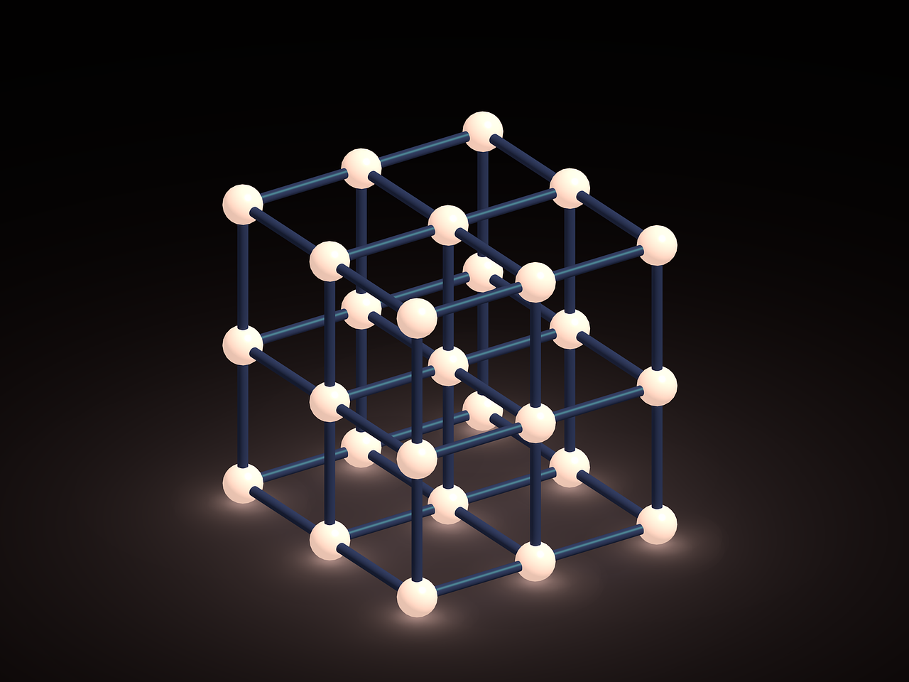

Condensed matter physics studies the macroscopic and microscopic physical properties of objects, objects ranging from the very dense to the very not-dense states. What principles are responsible for the solid nature of solids, the liquid nature of liquids, or the very dense Bose-Einstein condensate? Condensed matter investigates these questions. You can find some of the latest research here.
